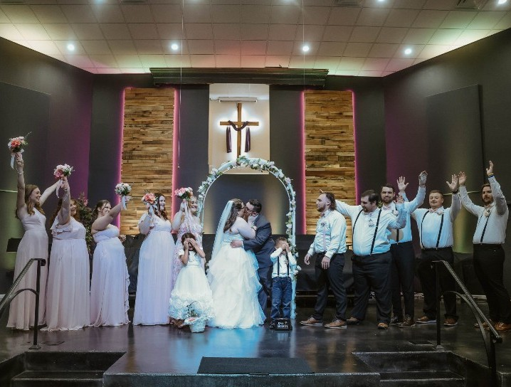

Background
I am a student with an interest in digital media, technology, and communication. My coursework has included topics such as digital wellness, accessibility, and responsible technology use. I am currently a senior in the College of Communication and Information at the University of Kentucky, where I am pursuing a degree in Communication. I am currently doing an internship at a realty photography company, where I am learning about digital media production and marketing. One fun Fact about me is I just got married in July.

Skills and Interests
- HTML and web structure
- Digital storytelling
- Accessibility and inclusive design
- Media analysis and communication